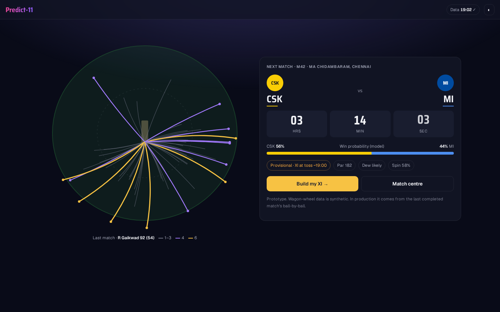
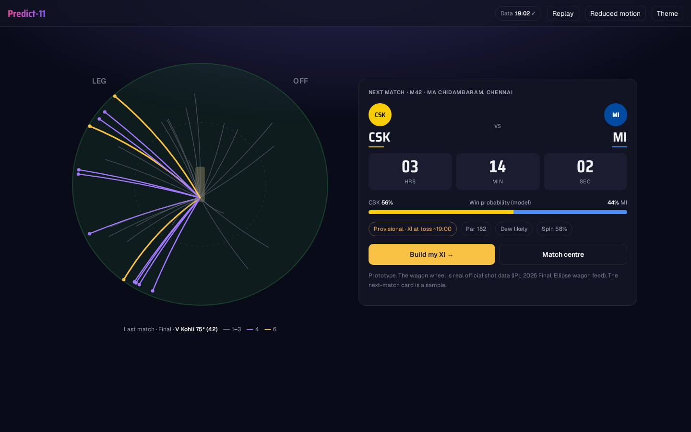
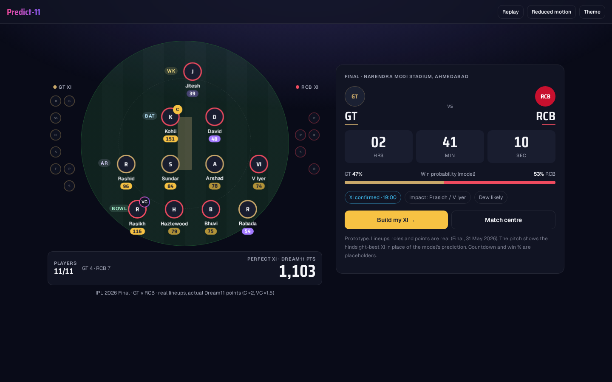
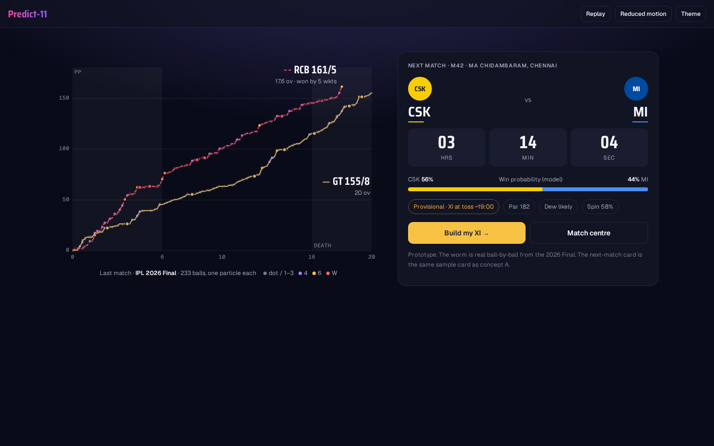
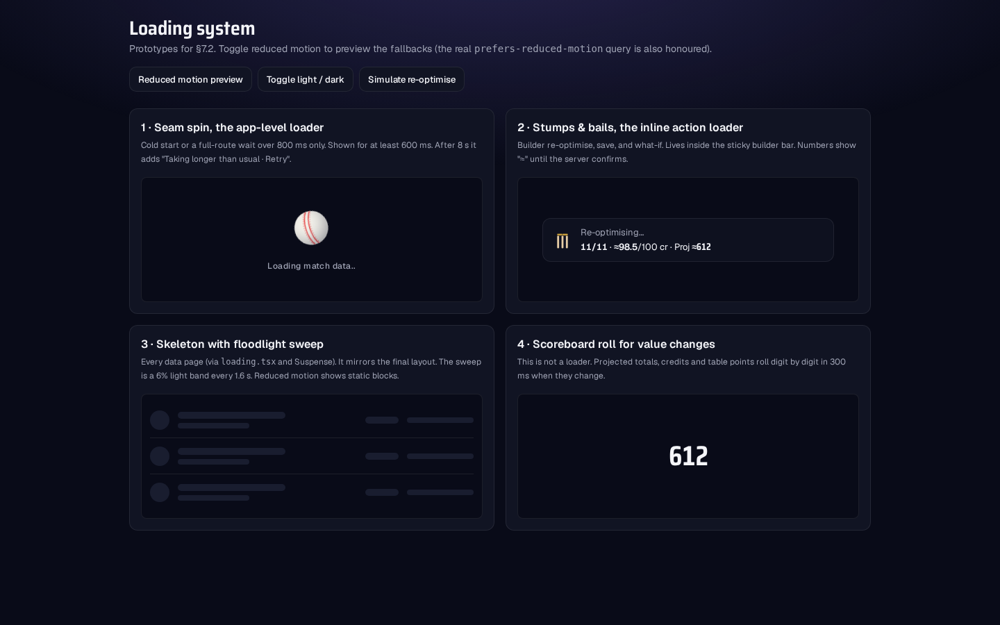

Landing hero and loader prototypes
Open each one to watch it play. Every hero has Replay and Reduced-motion controls and uses the same next-match card. Specs are in docs/DESIGN-DIRECTION.md §7. Screenshots are in screens/.

A · Wagon-Wheel Bloom
syntheticScoring rays bloom from the striker's end, one shot at a time. This is the recommended hero.
hero-wagon-wheel.html

A · Wagon wheel, real data
realConcept A drawn from official shot directions: Kohli's 75* (42) in the 2026 Final.
hero-wagon-wheel-real.html

B · XI Assembles
realEleven players from the Final (GT v RCB) fly from the benches onto the pitch, C and VC pop last, and the total rolls up.
hero-xi-assembles.html

C · Ball Field → worm
realFloodlight dust settles into the 2026 Final's two-innings worm. Each of the 233 balls is one particle.
hero-ball-field.html

Loaders
systemSeam-spin app loader, stumps-and-bails inline loader, floodlight-sweep skeleton and scoreboard roll.
loaders.html